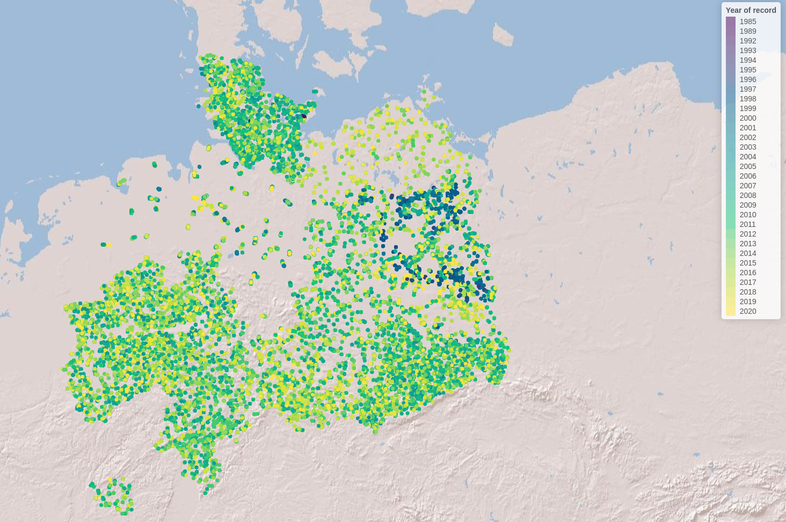

Case study - Lake Analysis
Integrating lakes into the processing of spatial and species data for network analyses of freshwater fish in Germany
2025-12-18
Source:vignettes/case_study_lakes.Rmd
case_study_lakes.RmdIntroduction
The following workflow showcases the functionality of the hydrographr package to integrate lakes into a stream network and species distribution analysis. We will use freshwater fish species occurrence data from the [cite German freshwater fish GBIF database] and HydroLAKES shape files and integrate them into the Hydrography90m stream network (Amatulli et al., 2022).
Load required libraries
library(hydrographr)
library(rgbif)
library(data.table)
library(dplyr)
library(terra)
library(tools)
library(stringr)
library(leaflet)
library(leafem)
library(sf)
library(tidyr)
library(readr)
library(ggplot2)Define working directory
# Define the "data_lakes" directory, where you have downloaded all the data,
# as the working directory
wdir <- "my/working/directory/data_lakes"
setwd(wdir)
# Create a new folder in the working directory to store all the data
dir.create("data")Species data
We first download the occurrence data with coordinates from GBIF
# Once: Download species occurrence data based on the key of the dataset
# and write out to working directory
spdata_all <- occ_download_get(key="0004551-231002084531237",
overwrite = TRUE) %>%
occ_download_import
fwrite(spdata_all, paste0(wdir, "/data/fish_germany_gbif.csv"),
row.names = F, quote = F, sep = "\t")
# Import and clean the data
spdata <- fread(paste0(wdir, "/data/fish_germany_gbif.csv"), sep = "\t") %>%
select(gbifID, decimalLongitude, decimalLatitude, species, year) %>%
rename("longitude" = "decimalLongitude",
"latitude" = "decimalLatitude")
head(spdata)| gbifID | longitude | latitude | species | year |
|---|---|---|---|---|
| 4058501303 | 13.2284 | 52.5709 | Abramis brama | 2007 |
| 4058501307 | 13.1564 | 52.4147 | Abramis brama | 2007 |
| 4058460309 | 13.1861 | 52.4576 | Abramis brama | 2007 |
| 4058501314 | 13.1093 | 52.4079 | Abramis brama | 2008 |
| 4058501316 | 13.5746 | 52.5091 | Abramis brama | 2008 |
| 4058460317 | 13.1177 | 52.4017 | Abramis brama | 2008 |
Let’s visualise the species occurrences on the map
Let’s define the extent (bounding box) of the study area (xmin, ymin, xmax, ymax)
# Define the extent
bbox <- c(min(spdata$longitude), min(spdata$latitude),
max(spdata$longitude), max(spdata$latitude))
# Define color palette for the different years of record
factpal <- colorFactor(hcl.colors(unique(spdata$year)), spdata$year)
# Create leaflet plot
spdata_plot <- leaflet(spdata) %>%
addProviderTiles('Esri.WorldShadedRelief') %>%
setMaxBounds(bbox[1], bbox[2], bbox[3], bbox[4]) %>%
addCircles(lng = ~longitude, lat = ~ latitude,
color = ~factpal(as.factor(year)),
opacity = 1) %>%
addLegend(pal = factpal, values = ~as.factor(year),
title = "Year of record")
spdata_plot
Abiotic variables data
1. Hydrography90m
In order to integrate lakes into the Hydrography90m, we need to download the following GEO.tiff files (in brackets the variable and folder name to download): 1. basin files (“basin”) 2. sub-catchment files (“SUb_catchment) 3. stream network (”segment”) 4. flow accumulation (“accumulation”) 5. flow direction
First, we identify the tile ID covering our species data. In our case that are three tiles (h16v02; h18v00; h18v02).
# get tile ID for Germany
tile_id <- get_tile_id(data = spdata,
lon = "longitude",
lat = "latitude")Secondly, we select and download all relevant hydrological variables necessary to intersect lakes and stream network and to delineate lake catchments.
# select the necessary hydrological variables for downloading
vars_tif <- c("basin", "sub_catchment", "segment", "accumulation", "direction")
# Extend timeout to 1000s to allow uninterrupted downloading
options(timeout = 1000)
# Download the tif.files of the selceted variables
download_tiles(variable = vars_tif,
tile_id = tile_id,
file_format = "tif",
download_dir = paste0(wdir, "data"))Note that the files have been downloaded to a new folder (i.e., “r.watershed”).
Now we can merge the three tile files to obtain the sub-catchment raster file for the lakes in Germany
for (var in vars_tif) {
# Define the folder for the current variable
var_dir <- paste0(wdir, "data/r.watershed/", var, "_tiles20d/")
# Build path to .tif file names for each variable and tile ids
tile_files <- paste0(var, "_", tile_id, ".tif")
# List only the matching .tif files in that folder
tile_names <- list.files(var_dir, pattern = "\\.tif$", full.names = FALSE)
tile_names <- tile_names[tile_names %in% tile_files]
# Run the merge function
merge_tiles(
tile_dir = var_dir,
tile_names = tile_names,
out_dir = paste0(wdir, "/data/"),
file_name = paste0(var, ".tif"),
read = FALSE,
bigtiff = TRUE
)
}It is always good practice to clean disk space by removing the files and folders we don’t need anymore.
# remove folder
unlink("r.watershed", recursive = TRUE)2. HydroLAKES
For the lake data we use the geo-spatial information from the HydroLAKES global lake data set and more specifically their lake polygons. You can either download the lake data stored in shapefiles or in the geodatabase format, both work with the hydrographr package lake functions. For more information on the data set you can have a look here
# Extend timeout to 1000s to allow uninterrupted downloading
options(timeout = 1000)
# Download URL of the HydroLAKES shapefile
hydrolakes_url <- "https://data.hydrosheds.org/file/hydrolakes/HydroLAKES_polys_v10_shp.zip"
hydrolakes <- paste0(wdir, "/data/", "HydroLAKES_polys_v10_shp.zip")
# Download the dataset
download.file("https://data.hydrosheds.org/file/hydrolakes/HydroLAKES_polys_v10_shp.zip", destfile = hydrolakes, mode = "wb")
unzip(hydrolakes, exdir = paste0(wdir, "/data"))Morphological Spatial Pattern Analysis (MSPA) tool from GuidosToolbox Workbench (GWB)
We need the open source MSPA analysis tool from GuidosToolbox Workbench (GWB), in order to identify the intersection points between our stream network and the lake polygons. You can find more information about the tool here
Linux
Follow the installation guidelines for your Linux system under here
or download the generic installer GWB_linux64.run
to your $HOME account. Open a terminal, make the installer
executable, and run it using the command:
Windows
Windows user need to install the GWB tool to their linux virtual machine. If you don’t have the linux virtual machine isntalled on your computer please follow the instructions here in order to be able to run the hydrographr R package. Then go to your linux system, open the terminal and install GuidosToolbox Workbench.
$ wget https://ies-ows.jrc.ec.europa.eu/gtb/GWB/GWB_linux64.run
$ chmod u+x GWB_linux64.run
$ ./GWB_linux64.runCitation: a) GWB (GuidosToolbox Workbench) is available at: https://forest.jrc.ec.europa.eu/en/activities/lpa/gtb/ b) The algorithms of this software are based on concepts of mathematical morphological image analysis described in the publications: Vogt, P., Riitters, K. (2017). GuidosToolbox: universal digital image object analysis. European Journal of Remote Sensing (TEJR), https://doi.org/10.1080/22797254.2017.1330650 and Soille, P., Vogt, P. (2009). Morphological Segmentation of Binary Patterns. Pattern Recognition Letters, https://doi.org/10.1016/j.patrec.2008.10.015
Lake ID identification
Let’s start the lake analysis by identifying all HydroLAKES which are spatially overlapping with our species data and extract the corresponding lake IDs. We can do that in two ways:
- Extracting all HydroLAKES IDs within the bounding box of our species data
head(spdata)
# let's avoid spaces between species names, since it can lead to names being assigned to different columns and instead connect them via an underscore
spdata$species <- gsub(" ", "_", spdata$species)
extract_lake_ids(spdata,
lon = "longitude",
lat = "latitude",
xmin = min(spdata$longitude),
ymin = min(spdata$latitude),
xmax = max(spdata$longitude),
ymax = max(spdata$latitude),
bbox = TRUE,
lake_shape = paste0(wdir, "/data/HydroLAKES_polys_v10_shp/HydroLAKES_polys_v10.shp"),
lake_id_table = paste0(wdir, "/data/"))This option leaves us with 3419 lakes, saved under the text file “lake_id.txt”. Let’s get more specific and only look at the lakes with species data within them.
- Extracting all HydroLAKES IDs of lakes that contain species data
extract_lake_ids(spdata,
lon = "longitude",
lat = "latitude",
lake_shape = paste0(wdir, "/data/HydroLAKES_polys_v10_shp/HydroLAKES_polys_v10.shp"),
lake_id_table = paste0(wdir, "/data/"))Stream network and lake intersection
Now we can overlay our stream segments with the lake shapefile. In that way we identify per lake all intersection points between stream network and lake. Note that this function is running in parallel and make sure to have enough free CPUs to run the function.
Lets first load in our lake id table which we just created with the 2
step and the extract_lake_ids function and we filter for
two lakes the Rangsdorfer lake (Hylak_id 165245) and the Zeuthener lake
(Hylak_id 165161) in our dataset.
lake_ids <- fread(paste0(wdir, "/data/lake_id.txt"))
lake_ids <- lake_ids %>%
filter(Hylak_id %in% c(165245, 165161)) %>%
distinct(Hylak_id, .keep_all = TRUE)Then we can run the get_lake_intersection function. Note
that you need to specify the correct node to your GWB (GuidosToolbox
Workbench) specified in the edge parameter.
get_lake_intersection(data = lake_ids,
lakes = paste0(wdir, "/data/HydroLAKES_polys_v10_shp/HydroLAKES_polys_v10.shp"),
lake_id = "Hylak_id",
lake_name = "HydroLAKES_polys_v10",
buffer = TRUE,
edge = "/home/USER/GWB_version/GWB",
stream = paste0(wdir, "/data/segment.tif"),
flow = paste0(wdir, "/data/accumulation.tif"),
basins = paste0(wdir, "/data/basin.tif"),
lake_dat = paste0(wdir, "/data/"),
n_cores = 1)Lake catchment delineation
Having identified the lake intersection points enables us to
delineate for each intersection point the corresponding upstream
catchment area. Doing this for the lake outlet (i.e the intersection
point with the highest flow accumulation value) gives us the entire lake
catchment area. To do this we apply the get_lake_catchment
function, specifying the outlet with n = 1 (default first row of the
intersection table):
lake_165245 <- fread(paste0(wdir, "/data/coord_lake_165245.txt"))
get_lake_catchment(data = lake_165245,
direction = paste0(wdir, "/data/direction.tif"),
lake_basin = paste0(wdir, "/data/"),
lake_id = "lake_ID",
n = 1,
n_cores = 1)With the delineated lake catchments and having identified the Hydrography90m unique stream segments IDs intersecting with lakes lets us use hydrographr R functions for additional analysis.
Environment90m data integration
We can now integrate the Environment90m dataset [cite Environment90m paper], which include over 50 variables related to topography, hydrology and climate data aggregated to the subcatchment level of the Hydrograpyh90m stream network and apply them to [see also https://hydrography.org/environment90m] our newly delineated lake catchments.
Land cover per lake catchment
For instance, we can download the land cover data to create time series representing the land cover change within a lake catchments. Let`s look at how the percentage of rainfed cropland and decidous forest changed during the time period 1992 to 2020 at lake Rangsdorf (HydroLAKE ID 165245).
tile_id <- "h18v02"
download_landcover_tables(
base_vars = c("c10", "c20"),
years = NULL,
tile_ids = tile_id,
download = TRUE,
download_dir = wdir,
file_format = "txt",
delete_zips = TRUE,
ignore_missing = FALSE,
tempdir = NULL,
quiet = FALSE
)First we identify all sub-catchments of the lake catchment using the
extract_ids function: Note check again visually which
basin.tif files are covered by the lake catchment, since it can span
over multiple basin tiles. In our case the lake catchment is situated
only in one tile (tile id h18v02).
lake_catch <- terra::rast(paste0(wdir, "/data/basin_lake_165245_coord_1.tif"))
sub_catch <- terra::rast(paste0(wdir, "/data/sub_catchment.tif"))
lake_catch_crop <- terra::crop(sub_catch, lake_catch)
lake_catch_crop <- terra::mask(lake_catch_crop, lake_catch)
terra::writeRaster(lake_catch_crop, paste0(wdir, "/data/lake_catch_crop.tif"), overwrite = TRUE)
lake_catch_crop <- (paste0(wdir, "/data/lake_catch_crop.tif"))
lake_catch_ids <- extract_ids(subc_layer = lake_catch_crop)
fwrite(lake_catch_ids, paste0(wdir, '/data/subc_IDs.txt'))Now we subset the Environment90m land cover data by the sub_catchment ID and join the yearly data table to create a time series of land cover change.
years <- 1992:2020
tile_id <- "h18v02"
# Create name vectors
c10_names <- paste0("c10_", years)
c20_names <- paste0("c20_", years)
var <- c(c10_names, c20_names)
tb <- get_predict_table(variable = var,
statistics = c("mean"),
tile_id = tile_id,
input_var_path = paste0(wdir, "/esa_cci_landcover_v2_1_1/"),
subcatch_id = file.path(wdir, "/data/subc_IDs.txt"),
out_file_path = paste0(wdir, "/data/predictTB.csv"),
read = TRUE,
quiet = FALSE,
overwrite = TRUE,
n_cores = 1)
fwrite(tb, paste0(wdir, '/data/land_cover_subc.txt'))The landcover values show the percentage covered by the different land use categories.To show a change in land cover we will convert the percentage in the area they cover of any given sub-catchment. For this we will calculate the area of our sub-catchments.
lake_catch_crop <- terra::rast(paste0(wdir, "/data/lake_catch_crop.tif"))
lakec_area <- terra::expanse(lake_catch_crop, unit="km", zones=lake_catch_crop)
tb[, 2:59] <- tb[, 2:59] * lakec_area$area
col_sums <- colSums(tb[, 2:59])
# Convert named vector to data frame
df <- enframe(col_sums, name = "id", value = "value")
# Separate 'id' into 'variable' and 'year', remove "y" prefix from year
df <- df %>%
separate(id, into = c("variable", "year"), sep = "_y") %>%
mutate(year = as.numeric(year))Lets portrait the land cover time series within a simple histogram, showcasing the change over time in the rainfed and irrigated crop in the lake catchment.
Add histogram
# Plot
ggplot(df, aes(x = year, y = value, color = variable)) +
geom_line(size = 1.2) +
scale_color_manual(values = c("c10" = "blue", "c20" = "orange")) +
scale_x_continuous(
breaks = seq(min(df$year), max(df$year), by = 2) # Every 2nd year
) +
labs(x = "Year", y = "Land cover percentage", color = "Variable") +
theme_minimal() +
theme(
axis.text.x = element_text(angle = 45, hjust = 1)
)Additionally to the environmental analysis we can look at the position of lakes within the stream network. For instance we can calculate the distance between the Rangsdorfer lake and the Zeuthener lake (lake ID 165161). Do to this we first need to download vector data of the Hydrography90m stream network and abstract it into a graph.
Download the vector stream network geopackage
# Download the tif.files of the selceted variables
download_tiles(variable = "order_vect_segment",
tile_id = tile_id,
file_format = "gpkg",
download_dir = paste0(wdir, "/data/"))Note that the data is stored in a separate folder called r.stream.order. To calculate the distance between lakes we first represent the vector stream network in a graph.
my_graph <- read_geopackage(gpkg = paste0(wdir,
"data/r.stream.order",
"/order_vect_tiles20d/order_vect_segment_h18v02.gpkg"),
import_as = "graph")
my_graph <- read_geopackage(gpkg = paste0(wdir,
"/data/r.stream.order",
"/order_vect_merge.gpkg"),
import_as = "graph")Now we extract the stream segment ID of the lake outlets. Between the two lakes of interest we will calculate the distance in meter.
lake_165245_intersect <- fread(paste0(wdir, "/data/coord_lake_165245.txt"))
head(lake_165245_intersect)
lake_165161_intersect <- fread(paste0(wdir, "/data/coord_lake_165161.txt"))
head(lake_165161_intersect)In both tables the first row represents the lake outlet (having the highest flow accumulation value). We can now calculate the distance between the two outlets using the sub-catchment ID of the first row found in the column subc_id. That are for the Rangsdorfer lake subc_id 507419535 and for the Zeuthener lake subc_id 507343759. They correspond to the unique sub-catchment and stream segment ID of the Hydrography90m stream network.
subc_id <- as.numeric(c("507419535", "507343759"))
subc_distances <- get_distance_graph(my_graph,
subc_id = subc_id,
variable = "length",
distance_m = TRUE,
)
head(subc_distances)The distance between the two lakes (from outlet to outlet) amounts to 31842.6 meter or 31.8 km.